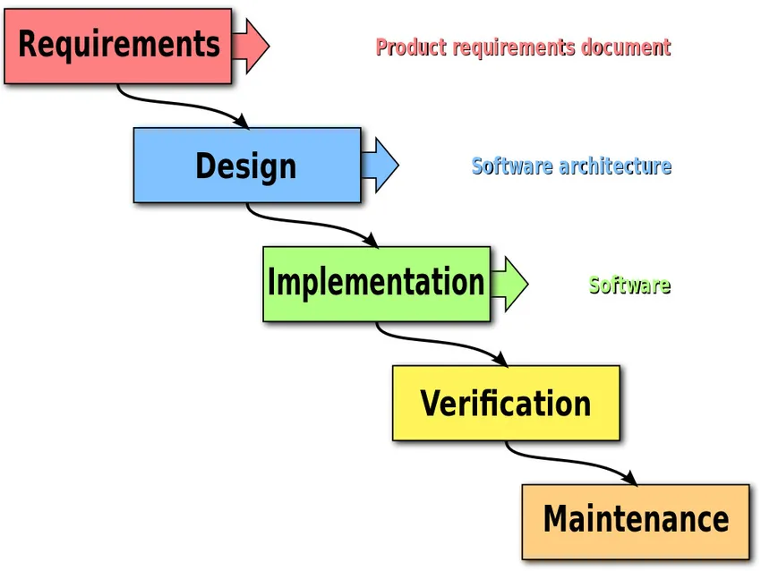
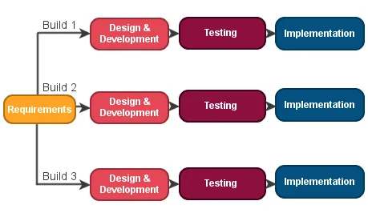
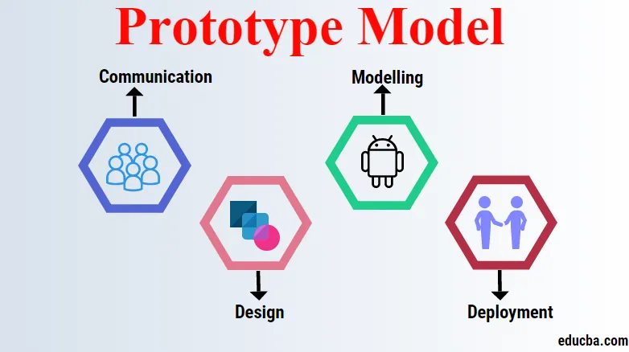
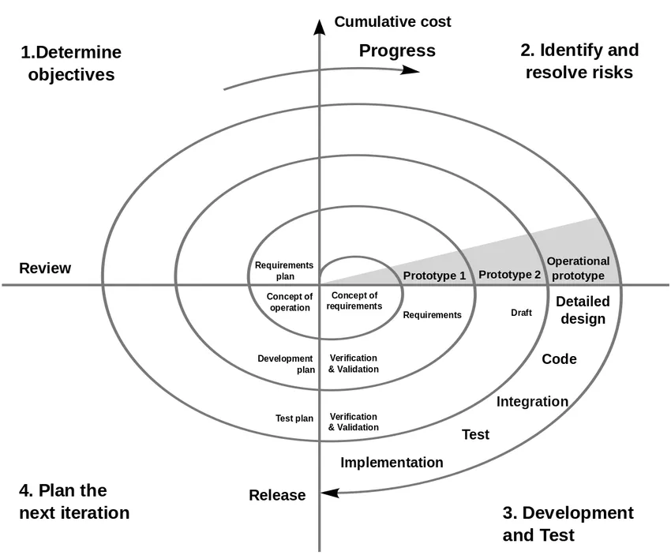
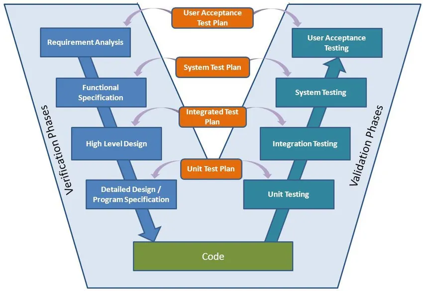
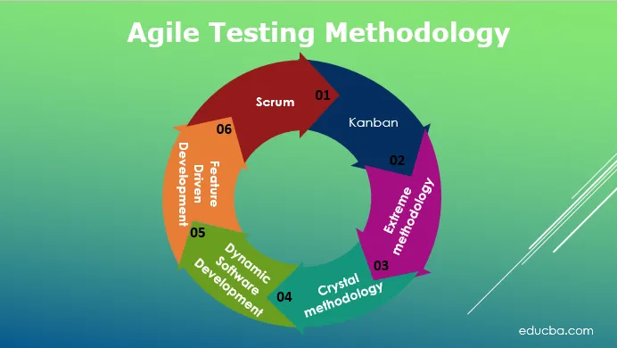

Jugamudeli esimese proovi tutvustas Winston w Royce 1970. aastal oma artiklis. Pärast seda on jugamudelis öeldud, et üks peaks teise faasi minema ainult siis, kui eelmisi faase on täielikult testitud, üle vaadatud ja kinnitatud. See rõhutab etappide loogilist progresseerumist.Jugamudelis jaguneb kogu tarkvaraarenduse protsess etappideks, kus ühe faasi väljund toimib järgmise faasi sisendina. Järgmine etapp algab alles siis, kui eelmine etapp on lõpule jõudnud.
Kaitseprojektis kasutatakse peamiselt jugamudelit, kuna seal on nõue selge, sest enne arendusetappi siirdumist analüüsivad nad seda hästi. Seda saab kasutada ka migratsiooniprojektides, kus nõuded on samad, ainult platvorm või keeled võivad erineda/muutuda.
1950.ndatel. See mudel algab väiksemate nõudmistega ja SDLC protsessi käivitamiseks ei vaja see toote spetsifikatsiooni täielikku konteksti. See protsess on korduv ja iga SDLC protsessi kordamise korral tehakse tarkvara uuem versioon. Iga iteratsioon võib kesta 2–6 nädalat. Iga iteratsioon arendab selles lähenemises eraldi komponenti. See mudel nõuab ka režiimiressurssi kui jugamudel. Millal kasutada?
Iteartiivne mudel sobib kui:
Mittetäieliku tarkvaraprogrammi ja selle versioonide väljatöötamiseks kasutatakse prototüüpimudelit. See on tarkvara arendamise meetod. Seda kasutatakse lõpptoote varasema versiooni loomiseks ja testimiseks. See on iteratiivne protsess ja see mudel töötab peamiselt olukordades, kus nõuded on olemas aegsasti. Prototüübi mudelis tuleks nõue võimalikult detailselt määratleda. Kujundus on välja töötatud uue süsteemi jaoks ja sellest disainist luuakse esimene prototüüp. Prototüübi mudelis koostatakse tööprogrammid kiiresti.
Seda tuleks kasutada siis, kui lõppkasutajalt nõutakse palju suhtlemist lõppsüsteemidega, nagu veebisüsteemid, veebirakendused või liidesed. Nendega on liiklejaid kõige rohkem, alates pidevast kontrollimisest ja kasutamisest. Süsteemi arendamiseks on vaja koolitatud inimesi. See eeldab ka kliendi pidevat kättesaadavust erinevate sisseehitatud prototüüpide sisendite, tagasiside ja märkide eemaldamiseks. Eelised:
See mudel on kombinatsioon juga- ja spiraalmudelist ning töötab korduvalt. Projektiga seotud riskide põhjal juhendab see mudel meeskonda ühe või mitme SDLC mudeli, näiteks juga või Iteratiivse mudeli elementide vastuvõtmisel. Siin jagatakse tarkvara elutsükkel väiksemateks osadeks ja tarkvarale saab lisada uusi funktsioone isegi SDLC hilises staadiumis.
V-mudel on põhimõtteliselt laiendus jugamudelile, kus katsetamine ja arendusetapid on kavandatud paralleelselt. Üks pool koosneb verifitseerimisetapist, teine aga valideerimisetapist, mis ühendatakse lõpuks kodeerimisega. Järgmine olek algab alles siis, kui eelmine olek on lõpule viidud.
Agiilne mudeliprotsess SDLC-s hõlbustab arendajaid meeskonnaga suhtlemisel ja annab kliendile käimasoleva projekti kohta täieliku idee ning teeb vajadusel muudatusi. See paneb arendajad muudatusi tegema vastavalt kliendi interaktsioonile ja säästab ümbertöötamisel palju aega. Kuna see lähenemine töötab arendamisel ja testimisel käsikäes, töötavad arendajad ja testijad koos.
